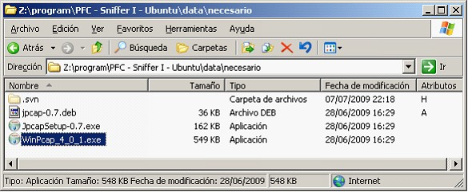
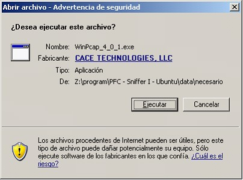
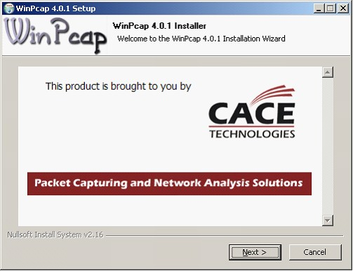
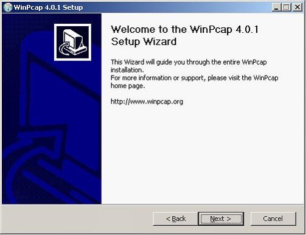
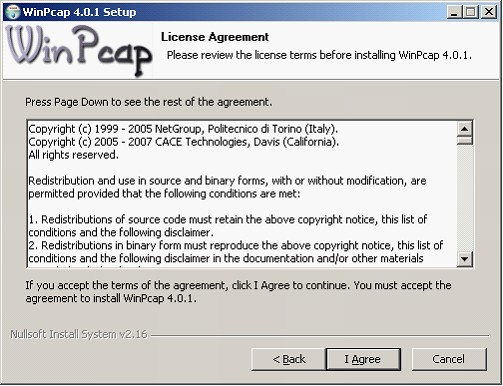
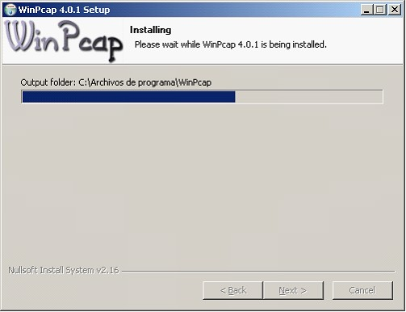
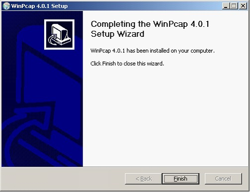

InstalacionWinPcap
Para instalar el programa WINPCAP buscar en el directorio de aplicaciones auxiliares el archivo ejecutable WinPcap_4_0_1.exe y pulsar doble clic sobre el fichero.

Aceptamos la Advertencia de seguridad pulsando el botón Ejecutar.

Para comenzar la instalación del programa pulsamos Next

Comienza el asistente de la instalación del programa, para continuar pulsamos Next

Debemos aceptar el acuerdo de licencia pulsando el botón I Agree

Comienza la extracción e instalación de los ficheros para continuar pulsamos el botón Next


Se han instalado los archivos y para finalizar la instalación pulsar el botón Finish
Copyright © 2010, <Carlos Mardones Muga>
Created with the Freeware Edition of HelpNDoc: Free PDF documentation generator